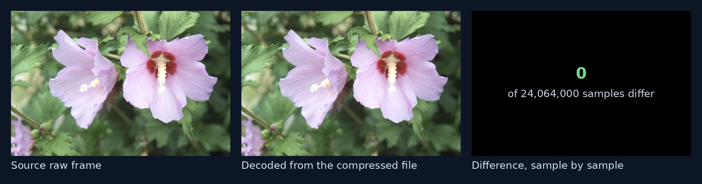
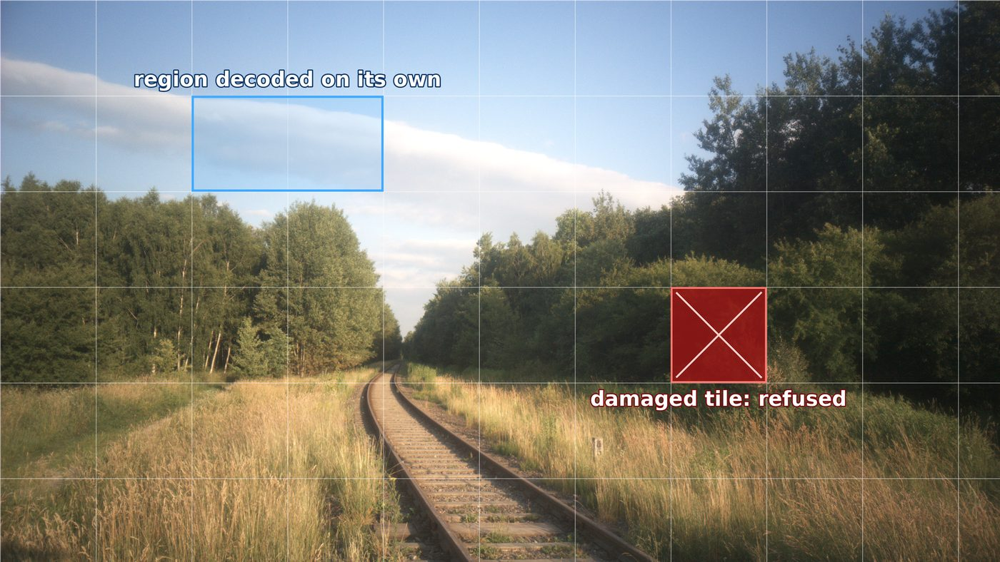
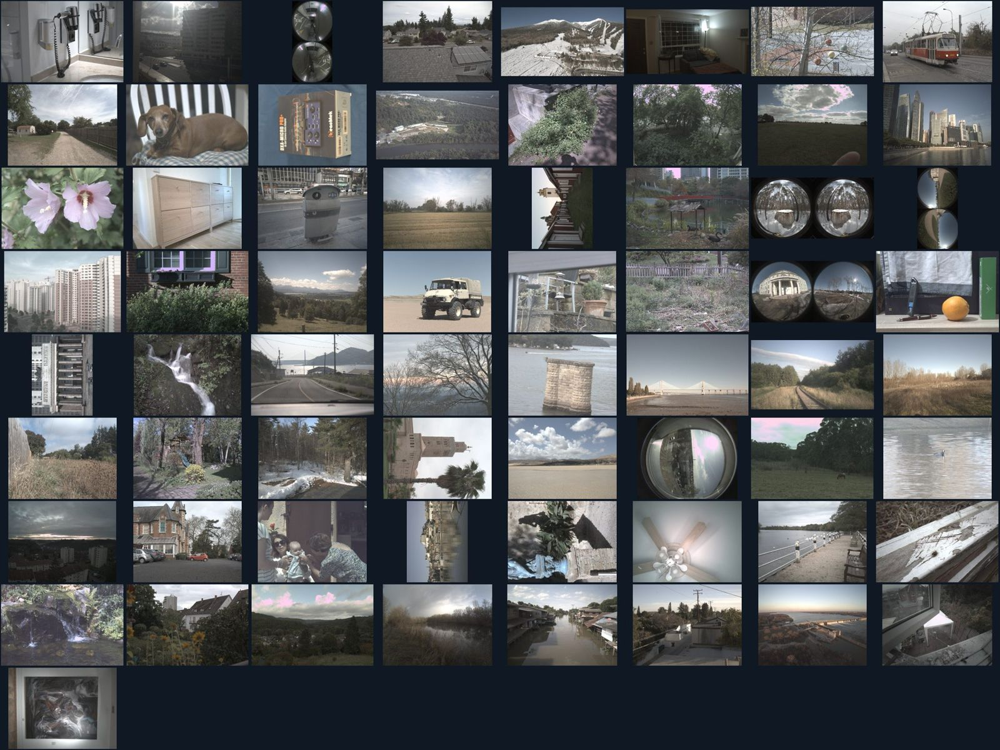

Home / Evidence
Four claims, each with its measurement
Every figure comes from our own test records, which your engineers can review under NDA. Where another codec does better, we say so.
Raw frame: Hasselblad Lunar, raw.pixls.us (CC0)
See it for yourself
A real round trip: 24 million samples in, the same 24 million out
We took one raw camera frame, compressed it with our encoder, decoded it with our decoder, and compared the result with the original, sample by sample. Not one of the 24,064,000 samples changed. That is what lossless means here: not "looks the same", but is the same.

Head to head
Smaller decoder. No undetected corruption.
We built four widely used lossless decoders the same way as ours and measured them, then damaged the same files the same ways for every codec. These are the results, including where a competitor is smaller.
100on100 checks a checksum over its header and over every tile, so any change to the data is caught and refused. CCSDS 121 streams and JPEG 2000 codestreams carry no integrity check over the coded data, by design; JPEG XL and JPEG-LS catch most damage through their own decoding, but not all.
| 9,600 damaged files each | refused | wrong image, reported as success | refused only after ~10 s | crash |
|---|---|---|---|---|
| 100on100 | 9,600 | 0 | 0 | 0 |
| JPEG XL (libjxl) | 9,569 | 31 (0.3%) | 0 | 0 |
| JPEG-LS (CharLS) | 8,032 | 896 (9.3%) | 672 (7.0%) | 0 |
| CCSDS 121 (libaec) | 5,052 | 4,548 (47.4%) | 0 | 0 |
| JPEG 2000 (OpenJPEG) | 2,402 | 7,196 (75.0%) | 0 | 0 |
The wrong images are subtle. Checked independently, single-bit damage changed JPEG XL images by 1 to 268 samples (off by at most 24) and JPEG 2000 images by up to 16,000 samples (off by at most 80), and each was reported as a successful decode: a picture that looks right and is not. JPEG-LS refused its slow cases in the end, after about 10 seconds each, against 12 ms for a clean decode. JPEG 2000 also decoded 2 damaged files exactly.
Method: libjxl 0.11.2, OpenJPEG 2.5.4, CharLS 2.4.3 and libaec 1.1.6, each built from its release source the same way (size-optimised, unused code removed, runtime libraries not counted). 24 raw camera crops (CC0) encoded losslessly by every codec; each file then damaged 400 ways (one bit flipped, 4 octets overwritten, 16 octets zeroed, cut short), identically for every codec: 9,600 damaged files per codec, 48,000 in all. Full results.
How damage is handled
A broken tile is refused; the rest still opens
Every 256 × 256 tile carries its own checksum. A tile that does not match is refused with a numbered reason, never drawn as a plausible wrong picture, and the other tiles still decode on their own. A region can be opened without decoding the rest of the frame.
The picture is an illustration of the behaviour. The measurements behind it are listed below.

The whole decoder as a RISC-V image, code and data (stack reserved, not stored). (The C99 library decoder alone is 9,075 octets of code and data.) It reads format versions 1 to 4, including tiles and the header checksum, and stays under a hard cap of 98,304 octets.
100on100 test recordOne test stream decodes to the same hash on x86-64, ARM (aarch64), RISC-V and WebAssembly. Integer arithmetic only, so there is no floating-point rounding for machines to disagree on. The full decoder’s WebAssembly run is in progress.
100on100 test recordA constructed set of extreme and damaged files. Each one either decodes to exactly the original or is refused with its exact numbered reason, identically on x86-64 and on ARM. None of them decoded into a plausible wrong picture.
100on100 test recordA plain C99 decoder, for linking into your product, gives the same output octet for octet as the reference decoder on every file tested. It decodes 37.5 MB/s of 16-bit samples on one core (untuned).
100on100 test recordCompression
Competitive size, stated plainly.
On 67 raw camera sensors, 100on100 is smaller than JPEG-LS and FFV1, and slightly larger than JPEG XL. We publish all three.
| Against | Untiled (version 3) files, pooled | Tiled (version 4) files, pooled |
|---|---|---|
| JPEG-LS | 10.01% smaller (1.29% median per sensor) | about 9.8% smaller |
| FFV1 | 4.81% smaller | about 4.5% smaller |
| JPEG XL | 0.82% larger | about 1.1% larger |
Tiled files carry about 0.28% more for the tiles. Every file was decoded back and compared bit for bit. Corpus: one raw file per camera model from raw.pixls.us (CC0). Medical-image results will be published after review.

Sources
- 100on100 test records: decoder size, cross-architecture results, hostile-file set, C99 decoder gate, compression. Available to evaluators under NDA.
- Camera corpus: raw.pixls.us, one raw file per camera model, CC0.
- CISA Known Exploited Vulnerabilities catalog (version 2026.10.04): CVE-2023-4863, CVE-2025-43300.
- Google Chrome Releases, “Stable Channel Update for Desktop”, 2023-09-11 (CVE-2023-4863).
- Apple, “About the security content of iOS 18.6.2 and iPadOS 18.6.2”, 2025-08-20 (CVE-2025-43300).
- Quarkslab, “Reverse engineering of Apple’s iOS 0-click CVE-2025-43300”, 2025-09-04.